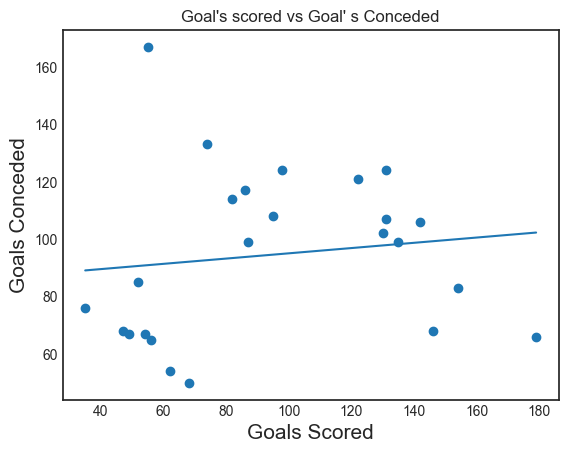
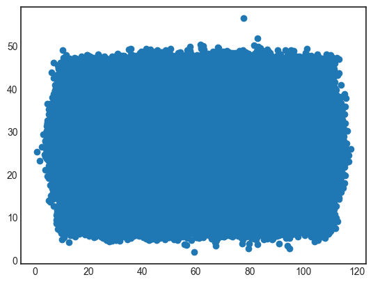

Data Understanding & Visualization
During this project for linear regression I encountered many issues when working on this project such as, my linear regression
model didn't fit my data because my data set was very small. Due to my data set being very small I analysed my graph and I
concluded that I needed to find a bigger data set, to make my linear regression model more accurate. Below are three images that show my
linear regression model throughout the duration of this project. After I could not get the previous data set to work,
I found a bigger data set on kaggle but not too big as I want to show my work on a graph.
Figure 1 is the graph with the very small data set (Goals conceded vs Goals Scored).
Figure 2 is the graph with the the really big data set (No names on the graph).
Figure 3 is the graph with the data set that I found to be the best (Games Won vs Games Played).
Figure 1
Figure 2
Figure 3